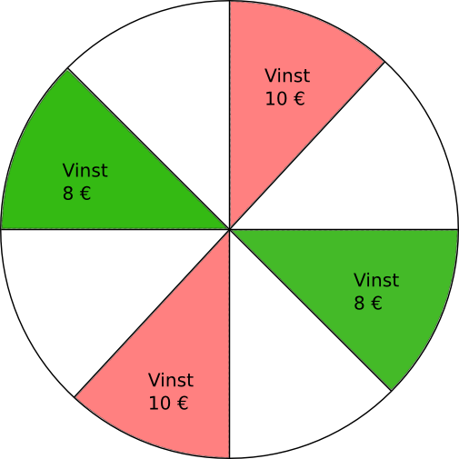

3. Väntevärde
Anna och Bertil spelar ett spel som går ut på att man kastar tärning. Om Anna får en tvåa ger Bertil 7 tändstickor till Anna, annars ger Anna 1 tändsticka till Bertil.
Hur kommer det att gå i det långa loppet? Vem kommer att ha flera tändstickor?
För att lösa problem som detta använder vi oss av väntevärde inom sannolikhetsläran. Väntevärdet är ett mått över hur det kommer att gå. Väntevärdet får vi genom att multiplicera sannolikheten för en enskild händelse med det värde som den är värd. Det totala väntevärdet får vi genom att addera ihop alla enskilda väntevärden.
Matematiskt betecknar vi väntevärdet för en händelse, X, som \( \mu = E(X) = \displaystyle\sum_x x P(x) \).
För att bilda väntevärdet skapar vi först följande tabell:
| Utfall | Sannolikhet | Annas förtjänst | Bertils förtjänst |
|---|---|---|---|
| 2 | 1/6 | +7 | -7 |
| 1,3,4,5,6 | 5/6 | -1 | +1 |
Väntevärdet ur Annas perspektiv är \( \dfrac{1}{6} \cdot 7 +\dfrac{5}{6}(-1) = \dfrac{2}{6} \approx 0,33 \). Det betyder att i det långa loppet kommer hon att ha 0,33 mera tändstickor än i början.
Ser vi på väntevärdet ur Bertils perspektiv får vi \( \dfrac{1}{6} (-7) +\dfrac{5}{6}\cdot 1 = -\dfrac{2}{6} \approx -0,33 \). Bertil kommer alltså i det långa loppet att förlora 0,33 tändstickor.
Exempel 1 Bestäm väntevärdet för ett tärningskast med en sexsidig tärning.
Lösning
För en sexsidig tärning har varje siffra sannolikheten \( \dfrac{1}{6} \).
Väntevärdet är \( 1\cdot\dfrac{1}{6}+2\cdot\dfrac{1}{6}+3\cdot\dfrac{1}{6}+4\cdot\dfrac{1}{6}+5\cdot\dfrac{1}{6}+6\cdot\dfrac{1}{6} = 3,5 \).
Märk att väntevärdet inte behöver vara ett sådant värde som vi inte kan få.
Väntevärdet för en händelse räknas som så att man multiplicerar värdet med sannolikheten och produkterna adderas ihop.
Om de möjliga värdena för den stokastiska varialben \( X \) är \( x_1, x_2, x_3 ,\ldots ,x_n \) och deras sannolikheter är \( p_1, p_2, p_3, \ldots , p_n \) så är väntevärdet \( E(X) = p_1 x_1 + p_2 x_2 +\ldots p_n x_n \).
Uppgifter
- Vi kastar två tärningar och adderar ihop ögontalen. Bestäm väntevärdet för händelsen.
Sannolikheterna för händelserna är följande:
\( P(2)=\dfrac{1}{36} \), \( P(3)=\dfrac{2}{36} \), \( P(4)=\dfrac{3}{36} \), \( P(5)=\dfrac{4}{36} \), \( P(6)=\dfrac{5}{36} \), \( P(7)=\dfrac{6}{36} \), \( P(8)=\dfrac{5}{36} \), \( P(9)=\dfrac{4}{36} \), \( P(10)=\dfrac{3}{36} \), \( P(11)=\dfrac{2}{36} \) och \( P(12)=\dfrac{1}{36} \).
Väntevärdet är \( 2\cdot \dfrac{1}{36}+3\cdot \dfrac{2}{36}+4\cdot\dfrac{3}{36}+5\cdot\dfrac{4}{36}+6\cdot\dfrac{5}{36}+7\cdot\dfrac{6}{36} \\ +8\cdot\dfrac{5}{36}+9\cdot\dfrac{4}{36}+10\cdot\dfrac{3}{36}+11\cdot\dfrac{2}{36}+12\cdot\dfrac{1}{36} = 7 \).
- Anna och Bertil kastar tärning. Om tärningen visar 1 eller 2 ger Bertil 1 tändsticka åt Anna, om tärningen visar 3 får Bertil 2 tändstickor av Anna och om tärningen visar 4, 5 eller 6 lägger båda bort en tändsticka från spelet.
- Bestäm väntevärdet för Anna.
\( E_A= \dfrac{2}{6}\cdot 1 -\dfrac{1}{6}\cdot 2 - \dfrac{3}{6}\cdot 1 = -\dfrac{1}{2} \).
- Bestäm väntevärdet för Bertil.
\( E_B= -\dfrac{2}{6}\cdot 1 +\dfrac{1}{6}\cdot 2 - \dfrac{3}{6}\cdot 1 = -\dfrac{1}{2} \).
- Vem vinner i längden? Anna, Bertil eller spelet?
>Spelet, eftersom Annas och Bertils väntevärden är negativa.
- Bestäm väntevärdet för Anna.
- I ett lyckohjul finns talen 1 till 20, där alla tal har samma sannolikhet. En rullning kostar 2 € och kommer det tal som man valde i början vinner man 30 €. Bestäm väntevärdet för en omgång.
Sannolikheten för varje tal är samma, \( \dfrac{1}{20} \).
Med sannolikheten \( \dfrac{1}{20} \) vinner man 30 €. Varje snurrning kostar 2 €.
Vi får väntevärdet \( E(X) = -\dfrac{20}{20} \cdot 2 + \dfrac{1}{20} \cdot 30 = -0,50 \). Väntevärdet är -0,50 €.
Eller som \( \( E(X) = -\dfrac{19}{20} \cdot 2 + \dfrac{1}{20} \cdot 28 \).
- Cecilia och Daniel kastar tärning. Om det kommer en etta eller två betalar Cecilia 4 € till Daniel. Annars betalar Daniel 2 € till Cecilia. Är spelet rejält, har bägge spelare väntevärdet 0?
Vi ser på väntevärdet ur Cecilas perspektiv.
Sannolikheten att hon betalar är \( \dfrac{2}{6} \), sannolikheten att hon får pengar är \( \dfrac{4}{6} \).
Väntevärdet \( E(X) = \dfrac{2}{6}\cdot (-4) + \dfrac{4}{6} \cdot 2 = 0 \). Eftersom väntevärdet är 0 är spelet rejält.
Om vi vill kan vi undersöka väntevärdet ur Daniels perspektiv, men hans sannolikheter är komplementen till Cecilias.
- Sannolikheterna för de olika raderna som ger vinst och deras vinstutdelning i Lotto finns i raden nedan. En rad lotto kostar 1 €.
Vinstrad Sannolikhet Genomsnittligt vinstbelopp 7 0,000000065 2 000 000 € 6+1 0,000000910 50 000 € 6 0,000013653 2 000 € 5 0,000677202 50 € 4 0,011286699 10 € - Bestäm väntevärdet för en rad Lotto. Beakta att en rad kostar 1 €.
Sannolikheten gånger vinstsumman för varje kombination ger väntevärdet är 0,35 €.
Eftersom en rad kostar 1,00 € så är spelarens väntevärde -0,65 €.
- Hur ser situationen ut efter 50 omgångar?
Efter 50 omgångar är väntevärdet -32,50 €, alltså en förlust.
- Bestäm väntevärdet för en rad Lotto. Beakta att en rad kostar 1 €.
- Anna spelar lyckohjul som är indelat i åtta lika stora sektorer, enligt figuren. En snurrning kostar 5 €.

- Bestäm väntevärdet efter en omgång?
\( E=\dfrac{2}{8}\cdot 10 + \dfrac{2}{8}\cdot 8 - 5 = -\dfrac{1}{2} \).
- Hur ser Annas situation ut efter 30 omgångar?
\( 30 (-0,50) = -15 \) €. Efter 30 omgångar är väntevärde en förlust om 15 €.
- Bestäm väntevärdet efter en omgång?
- I ett TV-program finns ett spel där en från studiopubliken vinner 100 €, 500 €, 2 000 € eller 10 000 €. Sannolikheterna för de olika vinstbeloppen framkommer ur tabellen.
vinstsumma sannolikhet 100 0,50 500 0,35 2 000 0,10 10 000 0,05 Hur stor summa skall produktionsbolaget reservera för vinsterna då programmet sänds 40 gånger?
Vi får väntevärdet per program, \( E(X) = 925 \) €. För 40 program skall produktionsbolaget reservera 37 000 €.
- För ett lotteri gäller följande: med sannolikheten 0,05 vinner man 10 € och med sannolikheten 0,20 vinner man 1 €, annars förlorar man. Hur många euron borde en lott kosta om vi tänker att spelet är rejält som betyder att väntevärdet har värdet 0 €?
\( E(X) = 0,05 \cdot 10 +0,20 \cdot 1 - x = 0 \) som ger att \( x=0,70 \).
- En kioskföretagare köper in varje vecka 4 lösnummer av en veckotidning. Desutom har hen skrivit ner antalet tidningar som går åt.
Antal sålda tidningar Sannolikhet 0 0,10 1 0,20 2 0,30 3 0,30 4 0,10 För varje inköpt exemplar betalar företagaren 3 €. Priset för en tidning är 5 €. Tidningar som inte säljs kan hen inte returnera. Hur många tidningar lönar det sig för kioskföretagaren att köpa in varje vecka?
Vi bildar väntevärdet för de olika fallen.